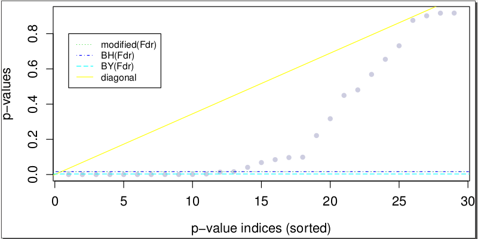
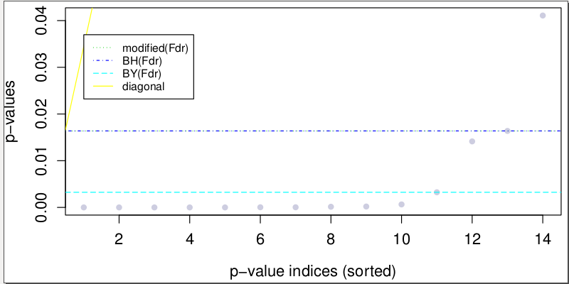

fdrASE.pl -- to plot and analyze ASE SNV p-values according to different FDR control methods: modiBH (modified BH method; employed in ASARP), BH (Benjamini Hochberg), BY (Benjamini Yekutieli) More details of the p-value adjustment methods (from R) are available at: stat.ethz.ch
USAGE:
perl $0 output_plots config_file [optional: parameter_file]
The two input files: config_file and parameter_file are the same as ASARP's output_plots.pdf and output_plots.zoom.pdf (close view of the cutoffs) will be output
User can try the demo RNA SNV file in the demo folder (see Demo for more details) as follows: Assume you are in the ASARP main folder
cd demo perl -I .. ../fdrASE.pl testFdrASE demo2.config demo.param
Results will be testFdrASE.pdf and testFdrASE.zoom.pdf respectively, as shown below:


Note that the demo dataset is so small that modiBH has the same cutoff of BH method in the examples.
The two output plots files show the overall (output_plots.pdf) and zoomed (output_plots.zoom.pdf)
views of the p-value cutoffs by different FDR control methods. The FDR control employed in ASARP
is the modified Benjamini Hochberg (modiBH) method, which shows the best balanced FDR for ASE and
ASARP gene predictions. Users can also directly set p-value cutoff (p_chi_snv) based on a particular
FDR method instead in the parameter_file for ASARP
(remember to comment out fdr to make p_chi_snv in effect)
Results from analyzing the demo RNA SNV file (demo/demo2data/rna.snv.demo.lst)
This pipeline is free software; you can redistribute it and/or modify it given that the related works and authors are cited and acknowledged.
This program is distributed in the hope that it will be useful, but without any warranty; without even the implied warranty of merchantability or fitness for a particular purpose.
Cyrus Tak-Ming CHAN
Xiao Lab, Department of Integrative Biology & Physiology, UCLA